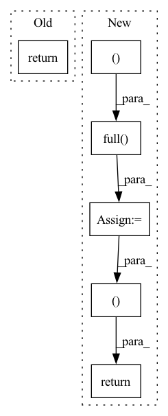

Pattern ID :35528
Before Change
scores[rel_index][index] = score
is_query[index] = index
return scores, is_query
def __len__(self) -> int:
Length of Retrieval dataset.After Change
scores = torch.zeros((len(self), self.n_queries), dtype=torch.float32)
is_query = torch.full((len(self),), -1, dtype=torch.int32)
targets = torch.full( (len(self), dtype=torch.long)
for index in range(self.n_queries):
relevant_img_idxs = self.relevant_arr[index]
relevance_scores = self.relevance_scores[index]
relevant_indices = [self.imgid2index[img_id] for img_id in relevant_img_idxs]
for rel_index, score in zip(relevant_indices, relevance_scores):
scores[rel_index][index] = score
is_query[index] = index
targets[index] = self.index2label[index]
return scores, is_query, targets
def __len__(self) -> int:
Length of Retrieval dataset.
return self.data_lenIn pattern: SUPERPATTERN
Frequency: 3
Non-data size: 6
Instances Fragment ID: 101403787
Project Name: eora-ai/torchok
Commit Name: c86c080e5cd8288e8057ba825cb705c149c28034
Time: 2022-11-02
Author: sitcebelly@optic.xyz
File Name: torchok/data/datasets/representation/validation.py
M Class Name: RetrievalDataset
N Class Name: RetrievalDataset
M Method Name: _get_targets(1)
N Method Name: _get_targets(1)
M Parent Class: ImageDataset
N Parent Class: ImageDataset
M File Name: torchok/data/datasets/representation/validation.py
N File Name: torchok/data/datasets/representation/validation.py
M Start Line: 299
M End Line: 302
N Start Line: 291
N End Line: 302
Before Change
def q_sample(self, x_start, t, noise=None):
noise = default(noise, lambda: torch.randn_like(x_start))
return (
extract(self.sqrt_alphas_cumprod, t, x_start.shape) * x_start +
extract(self.sqrt_one_minus_alphas_cumprod, t, x_start.shape) * noise
)After Change
def q_sample(self, x_start, t, noise = None):
if isinstance(t, float):
batch = x_start.shape[0]
t = torch.full( (batch, device = x_start.device, dtype = x_start.dtype)
noise = default(noise, lambda: torch.randn_like(x_start))
log_snr = self.log_snr(t)
log_snr_padded_dim = right_pad_dims_to(x_start, log_snr)
alpha, sigma = log_snr_to_alpha_sigma(log_snr_padded_dim)
return alpha * x_start + sigma * noise, log_snr
def p_mean_variance(self, x, t, t_next = None, x_self_cond = None, clip_denoised = True):
x_start, pred_noise = self.model_predictions(x, t, x_self_cond)
Fragment ID: 101403789
Project Name: lucidrains/bit-diffusion
Commit Name: 7b25c9d18c4aa4200c7df429ffa7815641f67021
Time: 2022-08-17
Author: lucidrains@gmail.com
File Name: bit_diffusion/bit_diffusion.py
M Class Name: BitDiffusion
N Class Name: BitDiffusion
M Method Name: q_sample(4)
N Method Name: q_sample(4)
M Parent Class: nn.Module
N Parent Class: nn.Module
M File Name: bit_diffusion/bit_diffusion.py
N File Name: bit_diffusion/bit_diffusion.py
M Start Line: 557
M End Line: 562
N Start Line: 498
N End Line: 506
Before Change
// get topk
_, topk_idx = torch.topk(scores_matrix, max(self.topk), dim=-1) // n_users x k
return topk_idx
def evaluate(self, batch_matrix_list, eval_data):
calculate the metrics of all batches. It is called at the end of each epochAfter Change
scores_matrix = self.get_score_matrix(scores_tensor, user_len_list)
scores_matrix = torch.flip(scores_matrix, dims=[-1])
shape_matrix = torch.full( (len(user_len_list), 1 ), scores_matrix.shape[1],
device=scores_matrix.device)
// get topk
_, topk_idx = torch.topk(scores_matrix, max(self.topk), dim=-1) // n_users x k
// pack top_idx and shape_matrix
result = torch.cat((topk_idx, shape_matrix ), dim=1)
return result
def evaluate(self, batch_matrix_list, eval_data):
calculate the metrics of all batches. It is called at the end of each epoch Fragment ID: 101403781
Project Name: rucaibox/recbole
Commit Name: fff15574d2f6f28b385534a84d38c23d2b175f5a
Time: 2021-01-06
Author: tsotfsk@qq.com
File Name: recbole/evaluator/evaluators.py
M Class Name: TopKEvaluator
N Class Name: TopKEvaluator
M Method Name: collect(3)
N Method Name: collect(3)
M Parent Class: GroupedEvaluator
N Parent Class: GroupedEvaluator
M File Name: recbole/evaluator/evaluators.py
N File Name: recbole/evaluator/evaluators.py
M Start Line: 64
M End Line: 64
N Start Line: 66
N End Line: 78